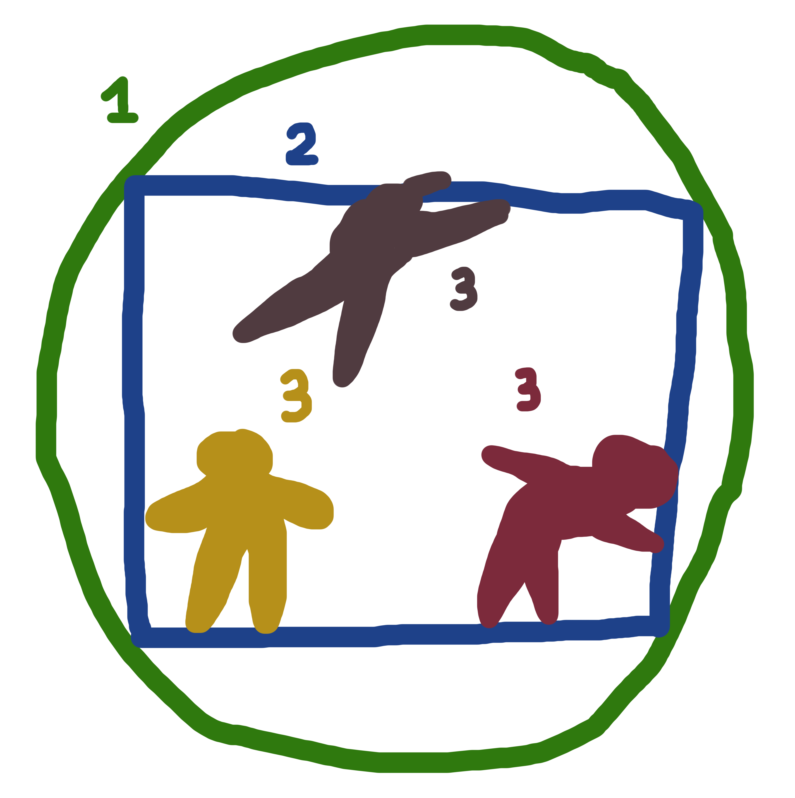

<!DOCTYPE html>
<html lang="en" dir="ltr">
  <head>
    <meta charset="utf-8">
    <meta name="viewport" content="width=device-width,
    initial-scale=1.0">
    <link rel="stylesheet" href="style.css">
    <title> Graphic designer changing the world</title>
  </head>
  <body>
    <main>

<!-- Landing Area -->

      <div id="landing">
        <div id="landing-text">
          <div id="landing-text-inner">
            <h1>Can Graphic Designer Change The World</h1>
            <!-- <h2>by Kristiana Marija Sproge</h2> -->
            <a href="#images" class="btn" id="view-work">
            let's find out
            </a>
          </div>
        </div> 
        <div id="landing-image"></div> 
      </div>

<!-- Table of Contents -->

<div class="toc">
      <nav><h3>Table of Contents</h3>
        <ol> Abstract </ol>
        <ol> Chapter 0: The Setting </ol>
        <ol> Chapter 1: Queen Sunrise. Three worlds of interest </ol>
        <ol> Chapter 2: Defuturing. Understanding The Problem </ol>
        <ol> Chapter 3: The Saviour. Graphic Designer's Role In The World </ol>
        <ol> Chapter 4: This Is How You Save The World </ol>
        <ol> Bibliography </ol>
      </nav>
</div>

<!-- Start of the Thesis Text Part -->

<div class="abstract">
  <a id="abstract" class="chapter-title"><h2>Abstract</h2></a>
  <p>The coming years can determine the future of our existence as a species, therefore the thesis follows a research question of how I, an individual and a graphic designer, can participate in changing the world? As the designer's creative occupation seems relatively trivial in comparison to politicians, doctors or scientists' contribution in the modern world, I find it important to highlight ways an individual can meaningfully participate in the fight for a better future, especially in the age of climate crisis. <br><br>
  I put forward the hypothesis that changes in the world can be achieved by small measures of individual action from both individuals and graphic designers. Through extensive research, conversations, practical visual experimentation and participation in the development of a global movement's graphic identity it was possible to conclude two main standpoints of the thesis that also happened to be the conclusion of the research - 1) graphic designers undeniably can create world-shifting works that are applied and brought further in the world. Additionally, unexpected research result is a fact that graphic designers' works often are instruments for other people to apply in the world, therefore possibly bringing the change into being even faster; 2) the most efficient weapon against climate crisis are the actions and perceptions of an individual that we all have the power to control.
  </p>
</div>

<div id="images">
  <div id="header">
    <h2>Chapter 0: The Setting</h2>
  </div>

<div class="introduction">
  <a id="introduction" class="chapter-title"><h2></h2></a>
  <p>I am sitting on an oak-wood deck on a Queen Sunrise cruise, sketching a logo for a small pet snack business, and looking at the calm morning sea. All of us here are all very hopeful, enjoying the rising sun and heading towards a future with no future for the living. Ahoy! <br><br>
    The coming years can determine the future of our existence as a species. As I am sitting here, kerning the logotype, anger, sadness, and guilt fills me as I cannot wrap my head around how I can impact-fully participate in saving the world, therefore the thesis follows a research question of how a graphic designer as an individual, can participate in changing the world? <br><br>
  The subject of the thesis lies between ecology, the present world we live in (the main worlds of interest being the ecosystem, economic world and the inner world of an individual), and an individual in a costume of a graphic designer — the potential agent of change. 
  As the designer's creative occupation seems relatively trivial in comparison to politicians, doctors or scientists' contribution in the modern world, I find it important to highlight ways an individual, such as a graphic designer, can also meaningfully participate in the fight for a better future, especially in the age of climate crisis.<br><br>
  The thesis acts locally, target audience being individuals and designers. The work tries to educate, prove and inspire that graphic designers have incredible powers to make industries as well as individuals act and perceive in a pre-designed way. It also raises several speculative questions of how to make the world a better, more sustainable place. Can a graphic designer be taken out of the economic status quo it has been created for?<br><br>
  The thesis tries to imagine graphic designers' best possible way to act in the present not only as a designer but an individual. It is done using various methods — by researching the main problems of the world that contributes to climate crisis; by exploring sustainable examples of graphic design working together with industrial production; by questioning advertising agency's creative on practical possibilities to implement sustainable materials in pitches for clients; by briefly observing two climate movements happening now that are using centralised and decentralised visual language; by actively talking about the issues of sustainability and world with family and friends throughout the thesis writing process to actively participate in conversations related to climate, power of individual action and the root of climate crisis to grasp different views on it; by arguing with angry climate sceptics on Latvian Fund For Nature facebook page; by trying to disconnect the graphic designer from the economic status quo and practicing its craft in a much wider setup (this is done through visual experimentation during the thesis writing process to practice the state of mind where no practical purpose is needed to create. Through this method I also start creating works where I re-imagine depiction of nature). <br><br>
  Preferably this last part is what the final graduation work consists of – showing the possible new ways how graphic design can work in the present for the future. Throughout the thesis writing process I am taking responsibility for being the agent of change myself on an individual level. Unexpected turn of events has been the ending of my internship that changed my already written view towards a more positive one on conventional graphic design being used in movements. Internship also allowed me to participate in the production of identity of a global movement, allowing me to understand semi-politicalised graphic design from an insiders point of view.
  </p>
</div>

<div id="images">
  <div id="chapter">
    <h2>Chapter 1: Queen Sunrise. Three worlds of interest </h2>
  </div>

<div class="chapter-1">
  <a id="chapter-1" class="chapter-title"></a>

  
  <div class="caption">
    <p> Cruise ship, description of the photo.</p>
  </div>

<p>Who were those good people that gave us free tickets to the cruise heading towards defuturing? I stand here with an organic gin-tonic in my hand, no straw, motivated to change the course of the cruise. The heat on the deck is unbearable and I kind of like it. If I stand still with both feet steady on the deck, deep, unrhythmic bass from somewhere below goes through my limbs, damaging my genetic code and micro bending the oak floor on the deck. That kind of deep, strong, tranquil bass you mostly notice only when it stops, and the peace and silence is so sudden that at the moment of appearance it seems obtrusive and loud, even uncomfortable.<br><br>
The bass is not coming from the ship itself, rather from something deeper in the sea, but who can tell—we are in neutral waters, a lot of unaccountable activities can happen here. The bass does not seem mechanic though. It is a reverb of at times something familiar. I am standing still and listening to my pulsing limbs carefully. I recognise the rhythm of my own steps in the bass I took when I was an infant. A reverb of the past is affecting my well-being at the present? <br><br>
Here I am, a slightly sunburned agent of change, sipping a cocktail, heading towards defuturing. In a world where we heavily rely on imagery fuelled consumption and nature has become a commodity, our imprint on our own existence has become more than palpable. It is visible, feel-able, smellable, and still, it happens slower than a swipe to the left, therefore it is hardly noticeable in the fast-paced world we are part of. Taking the statement of the fact that the world’s ecology is on the edge of collapse as given, how can I as a visually thinking, gin-tonic sipping graphic designer participate in changing the world so that the ship of our destruction changes its course? How can I, a tiny person in the sea, a graphic designer with a three-dimensional tribal typography on the back of my shirt, change the world? <br><br>
  To understand how the world can be changed, one needs to define what is meant by the “world” in this context. Roughly there are three worlds of interest that affect each other and work similarly to the ecological cycle of interconnectivity — 1) The world as an ecosystem and natural habitat of 8.7 species, including humans; 2) The world as a geopolitical whole embodying clusters of different societies governed by laws;3) The inner world of a person.  <br><br>
  
  <div class="caption">
    <p> Scheme of three worlds. Photoshop drawing, Kristiana Marija Sproge, 2020</p>
  </div>
The causal relationship and communication between these three worlds and strategic use of action from one world towards another are one of the points of interest in the research. An uprising of one world against other, then communicating its demands efficiently to the other, and proving to the worlds that all of them are entangled with each other, affect one another, and are all interested in the wellbeing of the other is a task I want to participate in as a citizen, a human, a person, and a graphic designer. <br><br>
In my profession, I have been taught how to communicate, think critically, and be an active member of society (through the medium of graphic design), and now, in 2020, I have an urge to discover how I can take these skills out into the world and make people lead the change necessary for their own survival.<br><br>
	When being observant and moving the cocktail umbrella to the left, on the deck of the ship one can clearly see all three worlds of interest merging in subtle cooperation. I will describe each of them individually, trying to show how inseparable and dependent on each other they are.<br><br>
	The geopolitical economic world: The ship, made in the 1990s and under the name Queen Sunrise, is a mega-machine that has had dozens of identities due to the multiple owners during the years. It is typical for the transfer of ownership to entail changing of the name and identity, even though the dark skeleton, iron muscles and white steel skin stays the same. The cruise liner is also an investment. Cruise lines have vended, modernised, or renamed their ships to match with travel trends and their aim is, as for any sane company and businessman, to earn while providing (and often inventing) a service. Around the 1960s with jet aircrafts entering the travel market, the cruise line services went into a terminal decline, and this was the moment when the shift from two-story ocean liners to mega-ship cruising took place. Since then cruise lines are carrying a dual character — on one hand being in the transportation business, and on the other hand in the leisure entertainment industry. The casino on the deck, for example, starts working only when we are in the open sea to avoid disputes with local laws, and the same applies to shops. I bought my cocktail when we were in the open waters already. Even if it was relatively expensive (around 10 euros), the more I drank the more I wanted to spend. In that sense, the design of the ship seems perfect — shiny, colourful, and hard to navigate outside of the entertainment zone. All of this is an intrinsic and necessary part of the economic world we live in, governed by laws, and this cruise seems to work well as an appropriate symbol for it.<br><br>
	The world as an ecosystem and a natural habitat: The ship goes out of one of the harbours they have stopped in along the way for the shore excursions. This harbour has been stuck into the dense layers of sand on the coastal zone years ago and is now able to ensure that hundreds of well-rested dizzy homo sapiens from a continent thousand miles away weekly can access the tiny land with dry feet. From the sky, the ocean liner looks like a small parasite swaying on the back of a walrus hair. The ship sways in the odourless, tasteless, and nearly colourless chemical substance — the main ingredient of Earth's hydrosphere and the fluid of all known living organisms — water. My cruise is steadily cutting through the water waves, right below the ships' plimsoll summer freeboard line so that the ship can continue to stay afloat and not to surrender to the dark and boundless depth of the ocean. Fluke, salmon, cod, and flatfish all are periodically spotted underwater in flocks, as well as ~2 more million species yet unknown to us that are slowly sliding by in the deep ocean right below our feet. 47 nautical miles to the south 6 fishing ships are catching fish (it is hard to see which ones through my over-the-counter binocular) to, later on, sell them further to middlemen for them to go to export and a smaller percentage to sell in their local market at home as the villagers depend on fishery for survival. The steel ships even though looking like superficial creatures of the modern world are basically a combination of natural materials pushed together in a semi-natural cluster of human imagination. In the past ships consisted mostly from wood but now the main ingredient is iron from Carajas mine in the state of Para in Northern Brazil, bauxite (which later on becomes aluminium) from Quebec in Canada and polyethylene, which is a polymerisation of ethene produced by the cracking of a quite bitter cocktail of ethane, propane, naphtha and gas oil. All of these natural materials are served to us by cutting up mountains and digging deep into the soil, picking the ores, oils, and gasses most efficient to use, which makes me think that the mega-machine I slide through the waves with now is just as natural (and dependent on nature) as me being on it with no safety west on.<br><br>
	The inner world of a person: As a person I am sharing the deck with approximately 170 other individuals — they are mostly sunbathing, chatting, playing shuffleboard, sliding down the tube in the pool, and sipping mimosas. Some are reading. We come from different backgrounds, we have different values, traumas, upbringings, experiences, therefore our perception of the world differs from one another as well. <br><br>
	My connection with this cruise ship is simple — it was made for me as a solvent individual of the economical world. I chose to believe this is the paradise I need to be in in order to get away from my worries. We are all striving for happiness, aren't we, but at the same time I have a feeling it is being used against us in the capitalist world by offering things we don't really need. Apart from that — I am here, on this ship, as a person with a behaviour, belief, morals, values, and some spirituality at the very least. I chose to be here even though this existentialism thought puts alarmingly much responsibility on my own shoulders. If all of us on this ship would have decided not to participate in this supernatural paradise, it wouldn't exist in the first place. This thought for a moment makes me feel very powerful. As an individual I do have the power of choice, especially because I live in the Western Europe and I have the privilege to spend, therefore the ship really depends on my choice (money) as much as I depend on it now, 945 nautical miles from shore in an open ocean. <br><br>
	My connection to the organisers of this cruise can be traced back through my bank transfer to their homepage, brand communication, character, and presentation of advertisements which in long term has bent my ability to objectively judge which desires and insecurities of mine are planted and which ones are actually authentically mine. Do I truly want to slide down the yellow water slide in the middle of the ocean in a tiny bikini because I desire to experience such a specific moment or I just want a tiny feeling of that happiness I saw in the banner for this cruise with the fantastic looking girls, boys and their grandparents, sipping cocktails and enjoying the yellow water slide with their kids?<br><br>
	We, the individuals, are here, in the world's ocean, on this economically loaded natural mega-machine. I think the producers of the cruise didn't know at the time that this journey leads to the end of the world, as the Earth and our existence seem so invincible. Now that we kind of rationally know it (which doesn't mean we understand it), it is a bit hard to believe the doom is near as the horizon is still quite beautiful. Only the deep bass from below is going through the limbs. I have a feeling the defuturing we are so eagerly shipping towards is very close to what the water is — odourless, tasteless, nearly colourless, and an intrinsic part of our very existence.
  </p>
</div>

<div id="images">
  <div id="chapter">
    <h2>Chapter 2: Defuturing. Understanding the problem </h2>
  </div>

  <div class="chapter-2">
    <a id="chapter-2" class="chapter-title"></a>
    <p>It is lovely how idyllic human-made paradises contain also casual imperfections revealing bits of reality. As a 27 year old person my first (conscious) time in a carousel park was four years back in Enschede (here I mean the travelling amusement park that goes from town to town, consists of easily assembled carousels that often are quite old, coloured over with vibrant characters from cartoons and big-breasted ladies in the airbrush technique). What I was surprised about was the harsh, blatant, metallic noise accompanying the carousels I have never heard in movies. I can only assume the playful tones that are being played there in particularly loud volume are also there to mask the squeaking of the metal structures and the huge engines shaking, throwing and (up)lifting people in the air. Imagining this amusement park with no music and no colourfully painted characters on the metal structures, seeing them clunk together, engines roaring, people screaming hysterically tragicomically gives me only the association of torture. <br><br>
    The small human-made paradise Queen Sunrise is no exception regarding the interlock between fantasy and reality. It is a home not only to roller coasters, VR rooms and wrinkly passengers but also an equivalent of a big, rusty engine including not only the mechanics of the vessel but also the mechanics of the social structures in society — a jail and a morgue on the bottom floors of the cruise to “discreetly keep a body without any undue distress for other guests”. <br><br>
    The cheerful identity of the ship has been working hard to make me think of this cruise as the one thing that will make me free of any worries, presenting the best illusive reality I could possibly have. I close my eyes and forget what I know for just a little bit. Diving into my carefree fantasy I hear someone calling. Someone has fallen on the oak floor from the heat. Unconscious. They are taking the person to the medical room. All I can think of is how surprisingly hard reality hits when it has not been experienced for a while. The contrast is harsh, and the feeling of getting a glimpse of reality in a place it shouldn't exist is depressing. This combines well with the nowadays systematic production of fantasy objects built on a hidden, tainted reality.<br><br>
    </p>

    <h2>What I talk about when I talk about problems of the world</h2>

    <p> The economic world we live in works using similar techniques of selling a dream, and the graphic designer is an integral part of it. Taking into account that 90 companies are responsible for ⅔ of global emissions, the fossil fuel produced dreams are the main cause behind the climate crisis which is the overarching problem of the world I am interested in. Two specific figures of interest are lack of transparency in the production processes (1) and the individual's (consumer's) behaviour (2). <br><br>

    (1) Poor production practices lead to poor management of sustainability (if any). If it would be possible to make the chain of production transparent, I believe it would be much easier for consumers to understand the importance of what production practices (harmful or ethical) they are directly supporting with their money and why it matters. Dangerous lack of transparency is present in nearly every conventional field of production — smartphone production, fashion, meat industry and agriculture, transportation and even the chocolate industry to mention a few, the latter demonstrating the complications of opaque chain of production apprehensively.<br><br>
    Chocolate is a product associated with joy and celebration, it is specifically designed by designers and illustrators, and marketed for every international holiday – Christmas as Santa Claus, Easter as bunnies and chocolate eggs, and Valentine's day as chocolate hearts. The feeling of comfort and luxury it brings with its special packaging, exquisite taste is unparalleled, but what we often do not see is the heavy cost of it. When you tear away the red foil from Santa's shoulder, underneath lies chocolate's supply chain where consumer's affordable luxuries are paid for in misery and exploitation. The journey chocolate makes from cocoa bean to foiled Santa is saturated with corruption and exploitation, and nearly all participants in the industry are entangled in a complex and often cruel supply chain which doesn't bring enough income to the most vulnerable people at the beginning of it. The chocolate industry makes well over 100 billion dollars a year while most farmers growing and preparing the cocoa are making less than one dollar a day. In such poverty it is difficult to expect farmers to do the right thing in terms of sustainability or exploitation. It makes farmers take desperate measures one of the consequences being slavery and child labour, and by the end of the day consumers are directly supporting a product that has a direct link to exploitation of humans and nature without even knowing it. <br><br>
    What the example of chocolate is illustrating so well is the harm of lack of knowledge on the making of a product in today's world, and graphic designer's cheerful bunny on the chocolate detaches it even further from the basis of reality. <br><br>
    Sustainable coco-practice examples where the designer brings in significant value are Mast Brothers and Tony's Chocolate. While Mast Brothers organic and traceable chocolate's packaging aesthetic is an absolute ode to the clean-cut design and makes the ethical chocolate a beautiful luxury object of desire, Tony's Chocolonely's lively design is an example of proud incorporation of education for the consumer on slave-free supply chain importance and sustainability on the packaging. These are two good examples on how graphic design can showcase sustainable production as a modern, desirable, mainstream product opposed to the already banal brown recycled paper and linen ribbon that push the sustainable products in the aisle of “alternatives”. If sustainable products have a chance of being the apple of consumers' eye on a daily basis, their graphic design identities have to be even sleeker than any other product — it has to qualify as the new norm to change the world. <br><br>
    
    (2) Consumer’s behaviour is a much more nuanced thing to work with, but it is also the one thing we all have a direct power to affect. It is one tentacle of our inner world where our values and character are weaved in. While trying on the coat of eco-proactivity I publicly opposed a person in Latvian Fund for Nature's new campaign on Facebook this week. I had an opportunity to experience the mindset of laughing at the idea that one person can change the world. The argument my discussion partner was using was that “the EU cannot make a difference because big polluters are the countries in Asia”. In short such an argument demonstrates a lack of understanding. The cause of the biggest of pollution are not necessarily the geographical locations where the pollution occurs — there would be no pollution in Asia without the consumer from Europe and United States of America purchasing the goods made there. The people with the highest incomes are the main contributors to the pollution. The discussion was not very fruitful as the sceptic was rude, not well informed and saw the motivated people involved in any individual sustainability action as green freaks living in utopia. It made me wonder. Nowadays behavioural information has become the most valuable information companies want to obtain and not for nothing. Since personal data has become a commodity, it outperforms any natural resource on the planet as the most valuable material on earth. The value of our attention and information is described well by Shoshana Zuboff's words –the goal of today's surveillance capitalism commodifying reality is to globally change people’s actual behaviour. People using social media are not really aware that the usage is actually paid by their behavioural input. Saying this, it is a tragic contradiction that people do not believe they can individually change anything regarding the (mal)functioning of the capitalist system or its effects on ecology while at the same time Silicon Valley's most valuable asset is the prediction and control of an individual's behaviour. If our behaviour is a useless player in changing the world, why do the world's largest investments lie on the choices our fingertips make on our screens?
    </p>

    <h2>Individual's role in changing the world </h2>

    <p> It is easy to think one cannot change the world — it releases responsibility for one's own actions. The strategy of the producers to put the responsibility on the consumer is also not the correct way to handle the situation, ridiculous “Please, recycle” placed on every CocaCola disposable bottle being one of the examples. Until we receive more urgent action from politicians we have to wisely use the power of our choice the companies depend on, and that involves changing our own behaviour in what we eat, what we wear, what we buy and what (and how) we demand. <br><br>
    It is not easy to change behaviour especially as intrinsic elements of one's culture as diet. Design theorist and philosopher Tony Fry states that in order to fundamentally engage [with a global problem] one has to “learn to think and act in another way, and therefore to participate in a process of unlearning” agreeing it is hard to do because it is hard to break the habitual approaches. <br><br>
    Unlearning is both a personal and a global challenge. The nonverbal visual persuasion in shapes of advertisement arrows pointing in all the directions during my growing up have mixed together with the wishes of my authentic personality, and any deliberate shift away from the accepted norm causes me to stand out from the crowd, which, speculatively, on a biological level acts against my own survival. Few options I can do as an individual is to understand my principles and act in accordance with them, educate myself, as well as acquire a certain attitude of perseverance, determination, confidence and hopefulness. I do have a tool in my hands as an individual: a choice, and the choice belongs to millions of other individuals as well whose money sustains every economy on the planet. If this choice is used collectively strategically supporting more sustainable products (and boycotting the opposite when possible), it tells the unattainable companies that the demand (i.e. money) is flowing in a direction of sustainability, and their flawed ways will follow this current of revenue which is already happening. Veganism (being a very individually-based ethical lifestyle) has been a great demonstration of how the collective individual demand for a certain quality of a product globally changes the supply. Veganism shows well how a very personal ethical choice can turn into global action changing the world. Therefore I strongly believe that change made in microcosm (the inner world and behaviour) gradually reflects in the macrocosm (the world),  therefore changing the microcosm of oneself might be the single most efficient way to change the world.
    </p>
  </div>

  <div id="images">
    <div id="chapter">
      <h2>Chapter 3: The Saviour. Graphic designer's role in the world </h2>
    </div>

    <div class="chapter-3">
      <a id="chapter-3" class="chapter-title"></a>
      <p>I wouldn't know where to place the graphic designer of 2020 in any of the three worlds of interest specifically and it is a tricky task to do. Now, the design industry is mostly serving the economic world, motivating consumers to execute various actions on behalf of the companies by attractively dressing up their products. It is more purposefully done in campaigns executed by advertising agencies (picture with the Big Red Boat) and less direct (but still present) in contemporary graphic design like the packaging design in example with soap. When designers have provided attractive solutions for their client's products, companies can then again, from the money earned, make new products and offer them to the consumer again. The economic system depends on the cycle where money goes around the globe, and the sequence where companies offer the food, hygiene products, electronics, and roof above citizen’s heads for them to be able to survive, work and consume again is a vicious cycle that makes me think in associations even further. <br><br>
      In the game of associations I played with my cabin companion on the deck yesterday one person thinks of a word and then immediately accepts the next one that naturally comes to mind, forming a chain of words that might reveal something about one's subconscious or even, as we played it, offer an esoteric solution to a previously defined problem. As I am sliding into my subconsciousness with the words hot, sun, beam, melt, snow, glacier, dirt, soil, and mole in front of my eyes, I relatively easily surprise myself with the quite logical cocktail of defuturing, doom, death, cycle, ecology, causality and soon enough — peripeteia. <br><br>
      Defuturing as a final destination for our cruise is quite a depressive thought, even though the tan you can get on the deck of the ship towards it is quite sensual. I assume it is our final destination but more than that it is also a direction. Causality is the cycle of cause and effect, the direction from one whole to the other. I think of it often when I wonder about the climate crisis and what are the underlying starters and preservers of it, like the opaque supply chains and their consequences mentioned before. Ecology is a cycle of happenings as itself — the rain that has touched the ground soaks in, moving forward in the ground to sustain flora and fauna. It evaporates further in the air, forming clouds and coming down as a liquid again. <br><br>
      The common part for all of these terms is the change from one to the other. The process, the way, the starting point, and the continuum to the next stage. An arrow that indicates the direction towards something else. The morph. Peripeteia as a sudden reversal of fortune or change in circumstances could be the lucky star we were unknowingly hoping for when we started trying to steer away from defuturing — if it is too late to turn the steering wheel, it could be the lucky iceberg, the almighty storm or the sudden fortunate heatwave that turns the ocean into vapour, boils our blood, puts the ship on the sandbank and liberates the future generation of the burden of reaching this unpleasant destination with no future that we brought ourselves into. When I think of a scenario where something unfortunate happens I remember the words I have heard many times used to get a grasp of explanation and relief: god's ways. These ways are usually unexpected, unfairly hurtful happenings that one cannot find any sense off but in a special way these ways, in a weird  way, show you the way. By the way, when I think of this, I can see a chain of cause and effect that has led to this not entirely pleasant time in our lives of climate crisis. Also the pandemic has hit the world hard, and one thing out of many I can think of is the fact that this is the wonderful chance we were hoping for to change the world — a strange way how we've been granted a chance to implement the new ways of the world if we want to restart our thinking and system as such. Why not throw in the holy graphic designer as well? <br><br>
      As Tony Fry put it already in 2011, it is important to grasp this like no other critical moment before. He calls critical moments “opportunities” and not only states that people will have a possibility to change the course of our ship, but also it will be done using the chance multiple unprecedented crises will have provided for us as the human habitat will change. “This is the opportunity of crisis. [...] Loss and breakdown will certainly occur and the new will come at a price, but what is certain is that design transformed will have a central role to play in the creation of any futuring process.” What is meant here by the designer's role is the re-design of politics as we know, weaving design into all the global transformations as a political agent. Even if it is not necessarily my personal interest as a designer now, seeing the design put on a pedestal as a main participant in rebuilding the world gives me certainty that graphic designers value reaches further than a servant of economic status quo.
      </p>

      <h2>Branding in the age of conscience</h2>

      <p>The profession of graphic designer is born for the economic world but as the time flies, I see how this world is not working properly and how the economic world by the vast consumerism tendencies is contributing to the damage of the ecology and the wellbeing of the people. As I have started to gain knowledge not only as a graphic designer but also as a citizen, individual, persona, activist, and consumer, I realise there is a clash between the economic world and my inner world as an ethically responsible person and designer. <br><br>
      The representatives of design and the industry as such in all its diversity are altogether a service industry fixed to the economic status quo. Apart from physical consumer product design, graphic designers are also developing a class higher service for the producers themselves – brand design which can be done either for a new company that has to still catch the potential clientele or an older company who wants to reshape their character or reputation. <br><br>
      Brand identity would usually include a new name for the company, new set of the company's values and beliefs, logo and the overall visual identity that will strengthen the company's character and make it visually and communicatively consistent, accessible and trustworthy for the public. After the design work is done, in the long term the company will sell more products, earn bigger revenue, employ more people and therefore will contribute to sustaining the local economy and the possible un-sustainment. <br><br>
      Working for this purpose as a graphic designer  whose interest lies in dismantling the economic status quo creates confusion within the inner world of the creative individual. Graphic designers who nowadays identify themselves as aware individuals both on a personal and a professional level have been put in an unfavourable position — it is a problematic subordination to make a brand look legitimate, beautiful, and trustful if at the same time one understands the actual harm company's practices does for the world.<br><br>
      We can take Primark potentially changing its brand identity as an example of a not directly tangible design product that impacts the wellbeing of the world. Apart from the long years of accusations and investigations on various violations, Primark has pledged to fulfil diverse pledges of ethics and sustainability through their homepage as the main source of communication, but as stated by Good On You initiative that offers accessibility to brands that are aiming for sustainability in their production, Primark's environment rating is 'not good enough'. They note that Primark uses almost none eco-friendly materials, no evidence of reduction targets of greenhouse gas emissions and no evidence that Primark is trying to meet its deadline of hazardous chemical elimination by 2020. Additionally, “none of its supply chains are certified by labor standards which ensure worker health and safety, living wages or other labor rights [...] [and] no evidence it ensures payment of a living wage in its supply chain.”. In a case where the ethical graphic designer (amongst the whole creative and marketing strategy team) has the ability to make a re-brand for such a company, it is a morally hard as the new brand design has to correspond to their new strategised keywords of “trustful”, “liable”, “accessible”, “sustainable”, using the newly designed brand character as a gateway to a new image by sewing a new colourful polyester costume onto the pale size-zero body of the same old production practices. <br><br>
      It would be creatively stimulating to see how a graphic designer with its knowledge of visual strategies would participate in an opposite brand development procedure — process of un-branding — invert the translation of brand identity strategies of invented characteristics and directing them back to the root where the true characteristics of company appears with its poorly managed cheap labour supply chains and unsustainable production practices in the forefront. How would such a company look like visually?<br><br>
      To detach graphic design from its economic purpose seems ironically an unnatural move from a graphic designer who wants everything in the world to be natural. Food and Drug Administration has still not engaged in rule-making to establish a formal definition for the term “natural"— you can put it on a chocolate bar as well as bathroom cleaner. I will therefore also put this label on my unnatural efforts.
      </p>

      <h2>Graphic designer's role in changing the world</h2>

      <p>Through the individual actions I am gaining confidence and knowledge to act also as a graphic designer. Saying this, I believe the designer cannot be separated from its carrier–the individual, and to be a world-shifting graphic designer means fundamentally tackling problems way outside the graphic design field – not only into the political frame but even more so into the personal frame of values, ethics and attitude. <br><br>
      I do have a tool in my hands as a graphic designer: feel for composition, sharp mind for the systematisation of information in a structurally understandable and visually appealing manner, and a choice. This package allows me to not only follow the individual's  actions of supporting sustainable products, boycott, discussions and diet change but also reach broader audiences, therefore being active in my own creative form of resistance would limit exploitive production practices on an even greater level. This opens up the question of communication – how to get the message across? Is it more efficient to yell at people at the table in a family gathering or punish them at the supermarket meat aisle when they are reaching out to their palms to touch the firm chicken breast? Should you walk around with your clothes covered in graphically pleasing statistics and educate passively but persistently in public space, or a catchy song with a music video would work better? Should you learn a thing or two from Russian propaganda and use it to advertise sustainability? Should we make people feel guilty about their choices or should we make them feel happy - which state of mind will result in the most efficient action? The moment where graphic designers can step into the action with their professionalism can be anywhere in the process of fighting for climate justice, but especially when it comes to visual depiction (1) and visual communication (2).<br><br>
        
      Visual depiction (1) of nature in modern visual capitalist culture is one of the things I see as necessary and possible as a graphic designer to tackle. In the supermarkets the dominance of the “natural” and sustainable products are visually stuck in a narrow niche often visually reducing nature to romanticised country vistas with happy animals, bright flowers and sunny blue sky, reminding me of a fragile yet the everlasting stereotypical feminine beauty. This mainstream association of nature as always green, tender, “needs to be saved” and dependent on humans is shallow and misleading. Nature at its core is not only a sunny farm but an unpredictable, dangerous, colourful, mind blowing, poisonous, healing, powerful, scary, mesmerising, gross, beautiful and omnipotent whole that will live on with or without us. Because of that I have started to challenge my perception and exercise my creative abilities as well to think of nature in a visually broader spectrum. Few of the graphical exercises are being presented here.<br><br>
      If it would be possible to re-shape the way nature and eco-movements are set in our minds from illusive depictions in the commercial world, I would speculate it would help making the act of preserving the climate a widely accepted, trendy and mainstream idea that would follow up with a political lawful actions making sustainability the new norm. It could be a movement everybody wants to be part of, a brand everyone wants to wear and a word everyone wants to be seen under. <br><br>
      On a note of making sustainability the new norm, theoretically designers also choose the material they want to use for the (mass) produced object. I approached my friend Nadīne who works in an advertising agency to explain to me if it is possible for them to implement more sustainable choices of materials in projects for large clients. Her answer was dry and simple: everything is dependent on the budget. The cheapest option usually is the one that is chosen, which in turn excludes often more expensive sustainable materials (especially if there is little chance of having a creative in the house with a priority on offering sustainable paper options for the new campaign's brochures). This makes me realise that in the capitalist world sustainability should not only be visually trendy but also made financially available or, more realistically, cheap production has to add to its price tag the yet unpaid real cost of cheap labour and weakly regulated exploitation of nature, which is the main reason why lots of products are unnaturally cheap competing with the more expensive sustainable options. But to do this, there has to be political involvement to resolve the issues behind the opaque supply chains legally.<br><br>
        
      An example of visual communication (2) as symbiosis of a graphic design and political activism are visual materials for movements demanding political action on a certain issue. Two of them in the Netherlands raised my interest as a creative – Extinction Rebellion protest (Amsterdam, 2020) and the climate march (The Hague, 2020). The difference between the movements fundamentally is that climate march is a peaceful gathering while Extinction Rebellion uses acknowledged nonviolent civil disobedience. The difference between them visually is that the visual identity is centralised under specific guidelines only for Extinction Rebellion.<br><br> 
      The climate march that took place all across Europe in 2020 had no identity and thousands of participants made posters themselves with ordinary tools they had at hand. In this march most of the signs stood out with their exceptional visual qualities made from various found materials, and stitched together in absolute free-style which, as a designer, I valued as incredibly inspiring and refreshing in the sea of overly refined designs. The posters were authentic, personal, rough and unique, radiating a feeling of untamed power. Also the transparency of the signs (both physical and metaphorical) was moving as all layers of production were bluntly visible.<br><br>
      Extinction Rebellion's visual identity is professionally well made so that the participants would always have visual materials ready to use and it would always be clear which movement it is and what it stands for. Bold sans-serif typeface accompanied with a graspable logo works well in terms of recognition, and the solid background colours that switch between purple, yellow, neon green and black are a distinctive feature of the identity, always carrying a concrete message in a slogan on top.<br><br>
      Even though the latter example is the most direct way I imagine graphic designers being involved in political action, as a creative I didn't really see much visual value and interest in centralised visual identity of movements because my personal taste goes for more messy, less clear and less refined stylistics, especially for a protest where human energy in collaborative effort and uncoordinated messaging is the main driving force (and a handmade poster is a powerful way of demonstrating it). At least that's what I thought until the recent turn of events.
      </p>
    </div>

    <div id="images">
      <div id="chapter">
        <h2>Chapter 4:  This is how you change the world. Conclusion </h2>
      </div>

    <div class="chapter-4">
        <a id="chapter-4" class="chapter-title"></a>
        <p> Recently, while interning at Studio Remco Van Bladel, I had a chance to design a logo for a campaign organised by Progressive International - “make amazon pay”. The campaign was meant to popularise Amazon boycott on the Black Friday, 27.11.2020, raising awareness of Amazon's workers universal rights, job security, sustainability and paying taxes in full that are still not met and are the demands from Progressive International in 2020. <br><br>
    The design brief was quite straightforward and at that point I did not know the scope of the movement and therefore felt quite comfortable playing around with the logo more than was asked to. From a bunch of spontaneous drafts shown for approval they loved the option where another copy of the original Amazon's arrow is used mirrored on top of the logo, indicating the direction back from “z” to “a” and it was picked as the main logo of the campaign. At that point I didn't think of the logo as an outstanding piece of design, just something that really works for its aim.<br><br>
      
    The last day of internship was the Black Friday when the “make amazon pay” campaign went to the streets. Only the next morning I realised the global scale of the movement. I received pictures from Bangladesh, India, Australia, Brazil, Poland, Belgium, Germany, and the United Kingdom, and when I saw the Amazon workers holding the protest logos I designed in their hands all across the globe - I cried. For the first time I understood what centralised visual identity for a movement means to the people who are physically at the front lines of the movement, fighting for the future. I realised that the united visual language in such a movement cannot be evaluated merely as a visual aesthetic as I did with Extinction Rebellion. Observing the participant facial expressions, body language and verbal expressions in videos and on the internet alongside the usage of movement's visuals I saw that the identity not only served as a medium of message carrier, but even more as a strong backbone for the legally unprotected workers. <br>
    The united identity they are marching under gives them certainty, safety, feeling they have a steady fundament to stand on. It gives the needed confidence when thousands of workers are united under a solid, joint legitimate organism and no one can tell them their way of protest is not serious enough.<br><br>
    What this experience revealed to me from a graphic designer's perspective is that a work like this changes the world not on its own – it starts in collaboration with someone's strategy, organisational abilities, outside of the designer's scope, and when the work is done, it is carried further in the world and applied by other people. This identity has given people spirit and unity that otherwise wouldn't be possible due to cultural, language and geographical separation as well as fear of repercussions, and through unity they are effectively demanding their rights and changing the course of our cruise.<br><br>
    
    The big change of the world happens when the work we, graphic designers, have made goes out of our hands, therefore we can rarely truly grasp our work's ability to change the world in the beginning. We create not only perceptions of things but also instruments, and the fact that 3 days after the Black Friday motion S5M-23515 has been introduced to the Scottish Parliament, calling for "Amazon to pay its workers fairly” and 6 days later 401 elected officials from all continents added their signatures to demand Amazon change the company's policies is a solid affirmation that the created instrument works and a tiny graphic designer can and has participated in the process of changing the world for better, loosening the screws of the malfunctioning parts of the steering wheel. <br><br>
    The economic world, natural world and the world of an individual coexist within one another, the inner world of a person having the main power of directing the ship towards defuturing or back. The gin-tonic sipping individuals on the Queen Sunrise's deck all are the agents of change as they have the incredible power of choice the ship itself depends on, and even better if one of them is in the costume of a graphic designer. The tools we are capable of developing are not only the dangerous depictions of happy cows in a sunny meadow on a milk carton. The instruments of our creation are similar to the real depiction of nature that is still waiting its moment on food packaging - unpredictable, omnipotent, colorful, mind blowing, powerful, scary, poisonous, healing, gross and mesmerising, and it is fundamentally our choice which characteristic and method we choose. We will rarely know from the start if our work will change the world's processes and we don't necessarily have to aim for it. What needs to be remembered is that if the work has micro-bent the oak fibres in the deck of one's inner microcosm, a world has been changed already.<br><br>
      
    Having experienced changing the world through a clear semi-conventional method during the writing of this thesis, for my graduation I would be eager to try affecting the inner world of a person through speculative, more suggestive, abstract, intuitive and poetic ways, possibly searching for new ways of visual depiction of something familiar, the overarching goal remaining to popularise and educate on and inspire to possible global sustainment practices
    </p>
    </div>

    <div id="images">
      <div id="chapter">
        <h2>Bibliography </h2>
      </div>

    <div class="bibliography">
        <a id="bibliography" class="chapter-title"></a>
    <h3>Books</h3>
Bales K. (2004). Disposable People: New Slavery in the Global Economy. Berkeley, CA: University of California Press.<br>
Bridle J. (2018). New Dark Age: Technology and the End of the Future. London, New York: Verso.Demos T.J. (2017). Against the Anthropocene. Berlin: Sternberg Press.<br>
Fry T. (2011). Design As Politics. New York: Berg.<br>
Foucault M. (1975). Discipline and Punish (Surveiller et punir : Naissance de la prison). France: Gallimard.<br>
Harari Y. N. (2011). Homo Sapiens. Israel: Dvir Publishing House Ltd.<br>
Haraway D.J. (2016). Staying With The Trouble. USA: Duke University Press.<br>
Kozlowski A., Bardecki M. (2012). Environmental Impacts in the Fashion Industry. Journal of Corporate Citizenship (45). PDF.<br>
Morton T. (2016). Dark Ecology: For a Logic of Future Coexistence. New York: Columbia University Press.<br>
Roberts L. (2006). GOOD: an Introduction to Ethics in Graphic Design: Ethics of Graphic Design. Switzerland: AVA Publishing SA.<br>
Smithson R. (1979). The Collected Writings. Berkeley, CA: University of California Press.<br>
Zuboff S. (2019). The Age of Surveillance Capitalism. London: Profile Books.<br>

<h3>Movies and videos</h3>
BBC. (2019). The Price Of Fast Fashion.<br>
Burtynsky E., Baichwal J. (2007). Manufactured Landscapes.<br>
Burtynsky E., Baichwal J. Pencier N. (2018). Anthropocene: The Human Epoch.<br>
Blewett K., Woods B. (2000). Slavery - A global Investigation.<br>
DW Documentary. (2020). Sustainable business, rethinking growth - Founders Valley.<br>
DW Documentary. (2020). The clothes we wear.<br>
Hughes J., Fothergill A., Scholey K. (2020). David Attenborough: A Life On Our Planet.<br>
Ishii K. (2004). A Taste Of Tea.<br>
Klein E., Posner J. (2018). Explained.<br>
Nasser L. (2018). Rotten: Bitter Chocolate.<br>
Orlowski J. (2020). The Social Dilemma.<br>

<h3>Others</h3>
Epic Of Gilgamesh. (2100 BC). Mesopotamia.<br>

<h3>Websites</h3>
Amnesty International and Afrewatch. (Date unknown). Is My Phone Powered By Labour? Retrieved from https://www.amnesty.org/en/latest/campaigns/2016/06/drc-cobalt-child-labour/<br>

Author unknown. (13 October, 2016). The only way is ethics: what are the moral obligations of a graphic designer?  Retrieved from https://www.itsnicethat.com/features/ethics-graphic-design-essay-131016?utm_source=facebook&utm_medium=social&utm_campaign=intsocia<br>

Bassompierre L., Almeida I., Perez M. G. (19 October 2020). $100-Billion Chocolate Industry Still Plagued by Child Labor. Retrieved from https://www.bloomberg.com/news/articles/2020-10-19/child-labor-worsened-on-west-african-cocoa-farms-study-shows<br>

 BBC. (24 March, 2010). Tracing the bitter truth of chocolate and child labour. Retrieved from http://news.bbc.co.uk/panorama/hi/front_page/newsid_8583000/8583499.stm<br>

Bose T., Neha S., Hills D. (Date unknown) Climate Change and Diet. IZA Discussion Paper No. 13426. Retrieved from https://ssrn.com/abstract=3643190.<br>

CruiseHive. (July 24, 2019). 10 Shocking Cruise Ship Facts You Never Thought Of. Retrieved from https://www.cruisehive.com/shocking-cruise-ship-facts-you-never-thought-of/33189<br>

CNN. (13 January, 2014). What cruise lines don't want you to know. Retrieved from https://edition.cnn.com/2013/02/13/opinion/walker-cruise-ships/index.html<br>

Eagle J. (7 December, 2017). ‘It’s a wrap’: Constantia Flexibles packages more than 50% of chocolate Santa Clauses in Germany. Retrieved from https://www.confectionerynews.com/Article/2017/12/07/Constantia-Flexibles-packages-chocolate-Santa-Clauses<br>

Fairtrade Foundation. (2020). What is Fair Trade? Retrieved from https://www.fairtrade.org.uk/what-is-fairtrade/<br>

Goldenberg S. (20 November 2013). Just 90 companies caused two-thirds of man-made global warming emissions. Retrieved from https://www.theguardian.com/environment/2013/nov/20/90-companies-man-made-global-warming-emissions-climate-change<br>

Greenpeace. 10 principles of corporate accountability. Retrieved from https://storage.googleapis.com/planet4-international-stateless/2018/04/884f4b59-gp-10-principles-for-corporate-accountability.pdf<br>

Kearns M. (2 July, 2015). 7 challenges facing future global seafood supply. Retrieved from https://www.seafoodsource.com/news/environment-sustainability/7-challenges-facing-future-global-seafood-supply<br>

Mast Brothers (2020). Our Family Promise. Retrieved from https://mastchocolate.com/about<br>

Ong J. (8 October 2020) Roll up roll up! Retrieved from https://www.itsnicethat.com/articles/olivier-bertrand-la-perruque-graphic-design-publication-081020?utm_source=facebook&utm_medium=social&utm_campaign=intsocial&utm_content=fbregular&fbclid=IwAR2fJ7OngK4K0xj8m6jO0ebXOdpjTguulSpTRRplpAuLN99mMdiX-oytBSw<br>

Onof  C. J. (Date unknown). University College, London. Retrieved from https://iep.utm.edu/sartre-ex/<br>

Padilla A.J., PhD. (2020). Niobium (Columbium) and Tantalum Statistics and Information. Retrieved from https://www.usgs.gov/centers/nmic/niobium-columbium-and-tantalum-statistics-and-information<br>

Prof. Vasconcelos M. (12 February 2018). Meat substitutes and lentil pasta: Legume products on the rise in Europe. Retrieved from https://www.uni-hohenheim.de/en/press-release?tx_ttnews%5Btt_news%5D=39041&cHash=7d3379678828c2cddf90799cde96b63c<br>

Rice University. Biogeochemical Cycles. Retrieved from https://openstax.org/books/microbiology/pages/8-7-biogeochemical-cycles<br>

Smith A. (4 December 2020). Amazon: 400 global politicians demand Jeff Bezos pay more tax, increase wages, and protect the environment. Retrieved from https://www.independent.co.uk/business/amazon-jeff-bezos-legislators-letter-b1765238.html?fbclid=IwAR3qvpE21kyUSn2vt3yLr3a9OiXowejps4uAXdhrFjTBaJtkNROP4T6RnH8<br>

Sutan M. (23 April 2020). Science denial among the greatest risks to humanity, new 'call to arms' report finds. Retrieved from https://www.abc.net.au/news/2020-04-23/science-denial-among-the-greatest-risks-to-humanity/12174782<br>

The Vegan Society. (Date unknown). Statistics.  Retrieved on https://www.vegansociety.com/news/media/statistics<br>

Tony’s Chocolonely (2020). Tony’s Impact. Retrieved from https://tonyschocolonely.com/nl/nl/onze-missie/tonys-impact<br>

Unilever (19 December 2018). Unilever acquires The Vegetarian Butcher. Retrieved from
https://www.unilever.com/news/press-releases/2018/unilever-acquires-the-vegetarian-butcher.html<br>

United States Department of Agriculture (July 16, 2020). Coastal Zone Soil Survey. Retrieved from nrcs.maps.arcgis.com<br>

United States Environmental Protection Agency. (Date unknown). Environmental Justice. Retrieved from https://www.epa.gov/environmentaljustice<br>

United States Environmental Protection Agency. (2018). Greenhouse Gas Emissions. Retrieved from https://www.epa.gov/ghgemissions/sources-greenhouse-gas-emissions<br><br>

    </main>

    <footer>
      <h3>So, yes. It is happening.</h3>
      <p>2021 <br> Kristiana Marija Sproge <br> Royal Academy Of Art The Hague</p>
    </footer>
  
      <script
      src="http://code.jquery.com/jquery-3.5.1.min.js"
      integrity="sha256-9/aliU8dGd2tb6OSsuzixeV4y/faTqgFtohetphbbj0="
      crossorigin="anonymous"></script>

      <script src="main.js"></script>
  </body>
</html>
